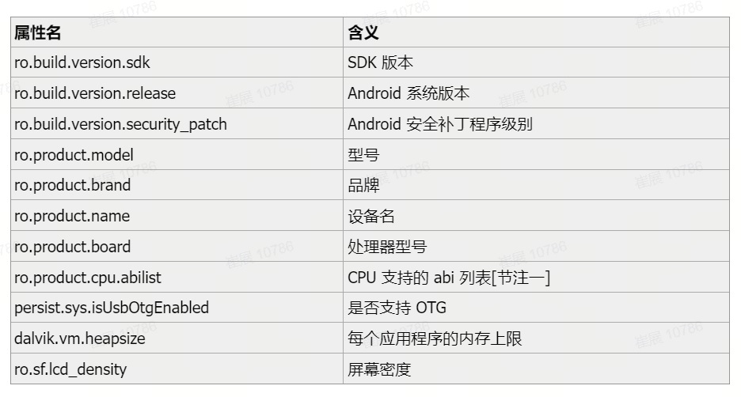
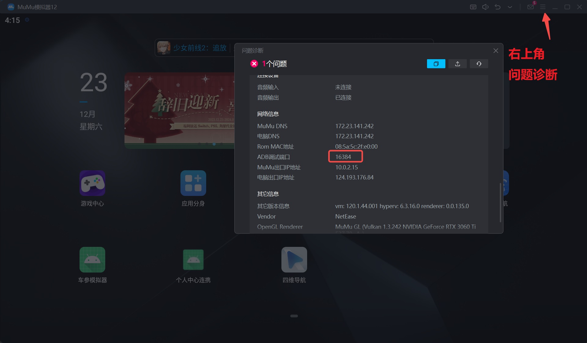

-
查看包名
adb shell pm list packages adb shell pm list packages | findstr com.xxx adb shell pm list packages | adb shell grep com.xxx -
查看包的信息
adb shell pm dump com.xxx.xxx.xxx | findstr version adb shell dumpsys package com.xxx.xxx.xxx | findstr version -
查看包的路径
adb shell pm path com.xxx.xxx.xxx -
获取系统应用
adb shell pm list packages -s -
获取第三方应用
adb shell pm list packages -3 -
启动指定 activity
adb shell am start -n com.example.myapplication/.MainActivity -
查看应用详情
adb shell dumpsys package com.example.myapplication -
获取日志输出到本地
adb logcat -b all -v time -d -> D:/log.txt //输出日志文件到D盘 log.txt文件中 -
查看当前界面所在的activity
adb shell dumpsys window | grep mCurrentFocus -
查看手机型号
adb shell getprop ro.product.model -
查看电池状况
adb shell dumpsys battery
其中 scale 代表最大电量，level 代表当前电量。上面的输出表示还剩下 50% 的电量。 -
查看分辨率
adb shell wm size -
查看屏幕密度
adb shell wm density -
查看显示屏参数
adb shell dumpsys window displays -
查看android_id
adb shell settings get secure android_id -
查看 Android 系统版本
adb shell getprop ro.build.version.release -
查看IP地址，网卡相关
adb shell ifconfig -
查看Mac地址
adb shell cat /sys/class/net/网卡/address 例如：网卡是 eth0 也可以用下面的命令查看 adb shell netcfg -
查看CPU信息
adb shell cat /proc/cpuinfo -
查看内存信息
adb shell cat /proc/meminfo -
查看硬件与系统属性
查看所有属性
adb shell cat /system/build.prop单独查看属性
adb shell getprop <属性名>常用属性列表 
-
OpenGL ES 版本查看方法
adb shell getprop ro.opengles.version参数说明:
Of OpenGL ES version android:glEsVersion ro.opengles.version OpenGL ES 1.0 0x00010000 65536 OpenGL ES 1.1 0x00010001 65537 OpenGL ES 2.0 0x00020000 131072 OpenGL ES 3.0 0x00030000 196608 OpenGL ES 3.1 0x00030001 196609 OpenGL ES 3.2 0x00030002 196610 -
获取Root权限
adb root -
获取GPU算力
adb shell cat /sys/class/kgsl/kgsl-3d0/gpu_busy_percentage adb shell cat /sys/class/kgsl/kgsl-3d0/gpubusy -
卸载程序
adb uninstall com.xxx.xxx.xxx // 卸载 render doc adb uninstall org.renderdoc.renderdoccmd.arm64 -
卸载程序时弹出 Failure [DELETE_FAILED_INTERNAL_ERROR]
adb shell pm path com.xxx.xxx.xxx // 获取要卸载的包的路径 adb root // 获取 root 权限 adb remount // 重新挂载系统权限 adb shell rm /system/product/app/autoai_navi/autoai_navi.apk // 删除包 adb reboot // 重启 -
安装程序
adb install [path of package] -
关闭程序
adb shell am force-stop com.xxx.xxx.xxx -
启动程序
adb shell am start com.xxx.xxx.xxx adb shell am start -n com.xxx.xxx/.MainActivity -
关闭走行（如果统一按钮无法点击）
adb shell am broadcast -a SET_DISPLAY_UX_RESTRICTION_OFF -
串口输入，然后重启机器
chmod 660 /dev/block/by-name/factoryparam echo 123456789012345678901234567890008210011210789ABC > /dev/block/by-name/factoryparam adb reboot -
adb 连接 MUMU 模拟器
adb connect 127.0.0.1:16384 adb shell注：查看 MUMU 模拟器端口号 
-
截屏
adb shell screencap -p /sdcard/screen.png && adb pull /sdcard/screen.png screen.png -
获取可用内存
adb shell "free -h"
参考：